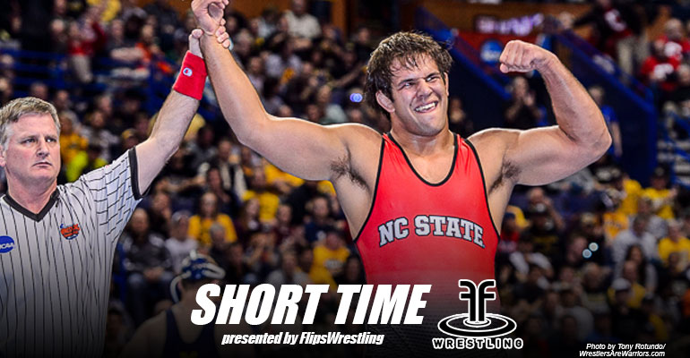

Pound For Pound.
The best college studs in the country compete every year for the #1 seed at the NCAA tournement, but only a small few can compete for the Hodge Trophy the Heisman of the wrestling community. People who compete for the Hodge are pound of pound the best wrestlers in the country, from undefeated records, to pinning and tech fall percentage these are the top 5 wrestlers P4P and the front runners for the coveted Hodge Trophy.
#5. Bo Nickal (Penn State)
The only freshman on this list, Bo Nickal, a multiple time Texas state champ came to Penn State and absolutley lit up the 174lb weight class. Compling a 29-1 record this season and capturing the Big 10 title and being seeded #1 at the NCAA national tournement over returning finalist Brain Realbuto of Cornell Nickal has not dissapointed the Nittany Lions at all this season. Pound for Pound Nickal ranks #5 here and we don't see him leaving the top 5 any time soon.
#4. Nahshon Garrett (Cornell)
This senior from Cornell university, Nahshon Garrett is up a weight class at 133lbs for his final season and what a season it has been. Racking up an undefeated 32-0 record and capturing his 4th EIWA individual title Garrett has shown no fear or respect for the other studs at this weigh class, taking down the returning national champion Cody Brewer earlier in the year. Garrett is seeded #1 at Nationals and looks to finally get over the hump and become a 2X finalist and hopefully a 1X champion.
#3. Nathan Tomasello (Ohio State)
Nate Tom from the Ohio State Buckeyes is one bad dude. After an incredible freshman season last year that ended with a national title Tomasello has dominated the 125lb weight class and is currently seeded #1 at the NCAA tournement and undefeated on the season. Capturing a second Big 10 championship against Penn State senior Nico Megaludis was a challege that Tomasello rose to this year and he hopes to peak again this year and capture his 2nd NCAA title.
#2. Nick Gwiazdowski (NC State)

Senior big man, Nick "G-Wiz" Gwiazdowski is already a 2X NCAA national champion and look to end his college career a 3X champ. No stranger to tough opponents Gwiazdowski downed heavy favorite Tony Nelson the returning champion at the time to capture his first NCAA title, then taking out Michigan's Adam Coon last year in an exciting match for heavyweights! G-Wiz is a leading canidate for the Hodge trophy this year and he hopes that he can cap off his career win a big win but he will need to first get past the youngest world champion in US history in Ohio State's Kyle Snyder. Both are ranked #1, #2 respectivly with G-Wiz taking the top seed but both are expected to clash in the finals this year.
#1. Alex Dieringer (Oklahoma State)
Cowboy up! Our #1 pound for pound and heavy favorite for the Hodge trophy this year is Oklahoma State's Alex Dieringer! Dieringer like Gwiazdowski is a 2X national champion who looks to cap off his senior year a 3X champion. "Ringer" as he is called in the wrestling world has compiled a 2 year undefeated record and has no problem continuing to dominate the 165lb weight class again. Seeded #1 at the NCAA's Ringer looks to dominate his way through the bracket and is heavily favorited in a weight class where he has dominated the past 2 years.